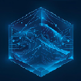

BOSA – Base

Editor Utility Toolkit

BOSA – Base is a lightweight editor-only toolset designed to help developers analyze scenes, inspect structured data, and work safely inside complex projects.
This package represents the foundation of our tooling ecosystem and reflects workflows tested during active game development.